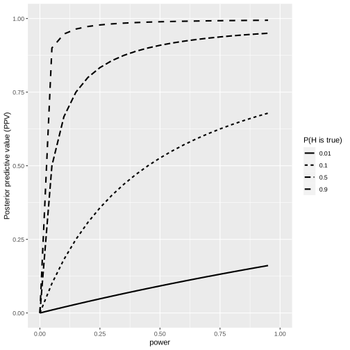

Chapter 18: Doing reproducible research
Contents
Chapter 18: Doing reproducible research#
library(tidyverse)
library(ggplot2)
library(cowplot)
set.seed(123456) # set random seed to exactly replicate results
# setup colorblind palette
# from http://www.cookbook-r.com/Graphs/Colors_(ggplot2)/#a-colorblind-friendly-palette
# The palette with grey:
cbPalette <- c("#999999", "#E69F00", "#56B4E9", "#009E73", "#F0E442", "#0072B2", "#D55E00", "#CC79A7")
── Attaching packages ─────────────────────────────────────────────────────────────────────────────────────────────────────────────────────────────── tidyverse 1.3.2 ──
✔ ggplot2 3.4.1 ✔ purrr 1.0.1
✔ tibble 3.1.8 ✔ dplyr 1.1.0
✔ tidyr 1.3.0 ✔ stringr 1.5.0
✔ readr 2.1.4 ✔ forcats 1.0.0
── Conflicts ────────────────────────────────────────────────────────────────────────────────────────────────────────────────────────────────── tidyverse_conflicts() ──
✖ dplyr::filter() masks stats::filter()
✖ dplyr::lag() masks stats::lag()
Figure 1#
alpha=0.05 # false positive rate
beta = seq(1.,0.05,-0.05) # false negative rate
powerVals = 1-beta
priorVals=c(.01,0.1,0.5,0.9)
nstudies=100
df=data.frame(power=rep(powerVals,length(priorVals))) %>%
mutate(priorVal=kronecker(priorVals,rep(1,length(powerVals))),
`P(H is true)` = as.factor(priorVal),
alpha=alpha)
# Positive Predictive Value (PPV) - the likelihood that a positive finding is true
PPV = function(df) {
df$PPV = (df$power*df$priorVal)/(df$power*df$priorVal + df$alpha*(1-df$priorVal))
return(df)
}
df=PPV(df)
ggplot(df,aes(power,PPV,linetype=`P(H is true)`)) +
geom_line(linewidth=1) +
ylim(0,1) +
xlim(0,1) +
ylab('Posterior predictive value (PPV)')

Figure 2#
trueEffectSize=0.2
dfCurse=data.frame(sampSize=seq(20,300,20)) %>%
mutate(effectSize=trueEffectSize,
alpha=0.05)
simCurse = function(df,nruns=1000){
sigResults=0
sigEffects=c()
for (i in 1:nruns){
tmpData=rnorm(df$sampSize,mean=df$effectSize,sd=1)
ttestResult=t.test(tmpData)
if (ttestResult$p.value<df$alpha){
sigResults = sigResults + 1
sigEffects=c(sigEffects,ttestResult$estimate)
}
}
df$power=sigResults/nruns
df$effectSizeEstimate=mean(sigEffects)
return(df)
}
dfCurse = dfCurse %>% group_by(sampSize) %>% do(simCurse(.))
p1 <- ggplot(dfCurse,aes(power,effectSizeEstimate)) +
geom_line(linewidth=1) +
ylim(0,max(dfCurse$effectSizeEstimate)*1.2) +
geom_hline(yintercept = trueEffectSize,size=1,linetype='dotted',color='red') +
ylab('Effect size estimate')
# single
sampSize=60
effectSize=0.2
nruns=1000
alpha=0.05
df=data.frame(idx=seq(1,nruns)) %>%
mutate(pval=NA,
estimate=NA)
for (i in 1:nruns){
tmpData=rnorm(sampSize,mean=effectSize,sd=1)
ttestResult=t.test(tmpData)
df$pval[i]=ttestResult$p.value
df$estimate[i]=ttestResult$estimate
}
df = df %>%
mutate(significant=pval<alpha) %>%
group_by(significant)
power=mean(df$pval<alpha)
meanSigEffect=mean(df$estimate[df$pval<alpha])
meanTrueEffect=mean(df$estimate)
p2 <- ggplot(df,aes(estimate,fill=significant)) +
geom_histogram(bins=50)
plot_grid(p1, p2)
Warning message:
“Using `size` aesthetic for lines was deprecated in ggplot2 3.4.0.
ℹ Please use `linewidth` instead.”